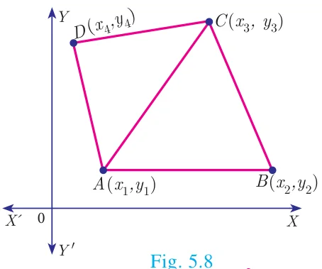
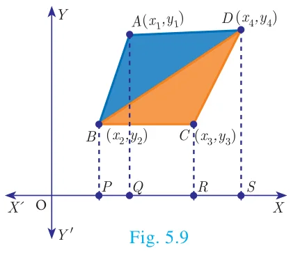
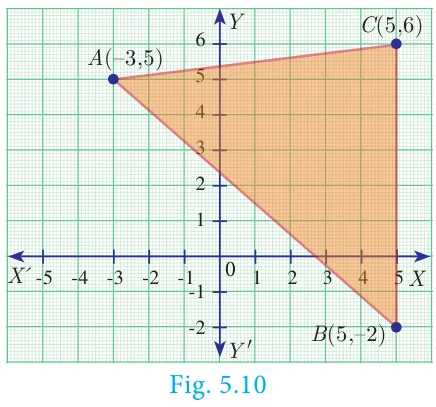
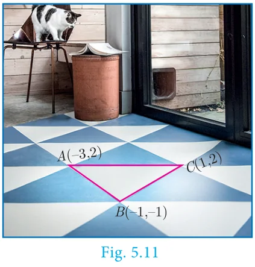
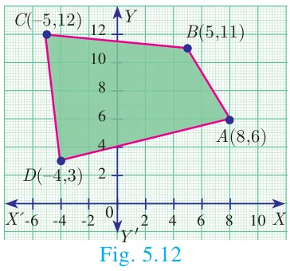
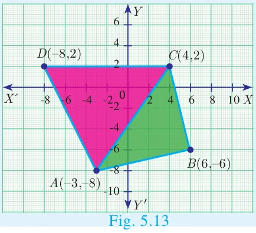
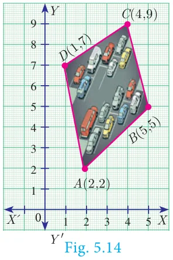
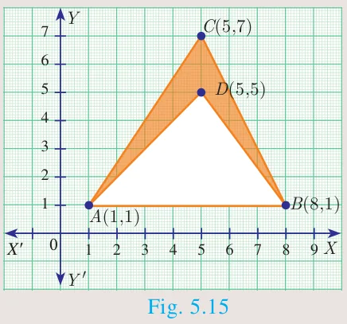

5.3 Area of a Quadrilateral

If \(ABCD\) is a quadrilateral, then considering the diagonal \(AC\), we can split the quadrilateral \(ABCD\) into two triangles \(ABC\) and \(ACD\).
Using area of triangle formula given its vertices, we can calculate the areas of triangles \(ABC\) and \(ACD\).
Now, Area of the quadrilateral \(ABCD\)
= Area of triangle \(ABC\) + Area of triangle \(ACD\)
We use this information to find area of a quadrilateral when its vertices are given.
Thinking Corner
How many triangles exist, whose area is zero?

Let \(A(x_1, y_1)\), \(B(x_2, y_2)\), \(C(x_3, y_3)\) and \(D(x_4, y_4)\) be the vertices of a quadrilateral \(ABCD\).
Now, Area of quadrilateral \(ABCD\)
= Area of the \(\Delta ABD\) + Area of the \(\Delta BCD\) (Fig 5.9)
\(= \dfrac{1}{2}\left\{(x_1y_2 + x_2y_4 + x_4y_1) - (x_2y_1 + x_4y_2 + x_1y_4)\right\}\)
\(+ \dfrac{1}{2}\left\{(x_2y_3 + x_3y_4 + x_4y_2) - (x_3y_2 + x_4y_3 + x_2y_4)\right\}\)
\(= \dfrac{1}{2}\left\{(x_1y_2 + x_2y_3 + x_3y_4 + x_4y_1) - (x_2y_1 + x_3y_2 + x_4y_3 + x_1y_4)\right\}\)
\(= \dfrac{1}{2}\left\{(x_1 - x_3)(y_2 - y_4) - (x_2 - x_4)(y_1 - y_3)\right\} \text{ sq.units.}\)
The following pictorial representation helps us to write the above formula very easily. Take the vertices \(A(x_1, y_1)\), \(B(x_2, y_2)\), \(C(x_3, y_3)\) and \(D(x_4, y_4)\) in counter-clockwise direction and write them column-wise as that of the area of a triangle.
\(\text{Area of the quadrilateral } ABCD = \dfrac{1}{2}\left|\begin{array}{ccccccccc} x_1 & & x_2 & & x_3 & & x_4 & & x_1 \\ & \times & & \times & & \times & & \times & \\ y_1 & & y_2 & & y_3 & & y_4 & & y_1 \end{array}\right|\)
\(= \dfrac{1}{2}\left\{(x_1y_2 + x_2y_3 + x_3y_4 + x_4y_1) - (x_2y_1 + x_3y_2 + x_4y_3 + x_1y_4)\right\} \text{ sq.units.}\)
Note
- To find the area of a quadrilateral, we divide it into triangular regions, which have no common area and then add the area of these regions.
- The area of the quadrilateral is never negative. That is, we always take the area of quadrilateral as positive.
Thinking Corner
- If the area of a quadrilateral formed by the points \((a, a)\), \((-a, a)\), \((a, -a)\) and \((-a, -a)\), where \(a \neq 0\) is 64 square units, then identify the type of the quadrilateral
- Find all possible values of \(a\).
Example 5.1
Find the area of the triangle whose vertices are \((-3, 5)\), \((5, 6)\) and \((5, -2)\)
Solution

Plot the points in a rough diagram and take them in counter-clockwise order.
Let the vertices be \(A(-3, 5)\), \(B(5, -2)\), \(C(5, 6)\) taken as \((x_1, y_1)\), \((x_2, y_2)\), \((x_3, y_3)\) respectively.
The area of \(\Delta ABC\) is
\(= \dfrac{1}{2}\left\{(x_1y_2 + x_2y_3 + x_3y_1) - (x_2y_1 + x_3y_2 + x_1y_3)\right\}\)
\(= \dfrac{1}{2}\left\{(6 + 30 + 25) - (25 - 10 - 18)\right\}\)
\(= \dfrac{1}{2}\{61 + 3\}\)
\(= \dfrac{1}{2}(64) = 32 \text{ sq.units}\)
Example 5.2
Show that the points \(P(-1.5, 3)\), \(Q(6, -2)\), \(R(-3, 4)\) are collinear.
Solution
The points are \(P(-1.5, 3)\), \(Q(6, -2)\), \(R(-3, 4)\)
\(\text{Area of } \Delta PQR = \dfrac{1}{2}\left\{(x_1y_2 + x_2y_3 + x_3y_1) - (x_2y_1 + x_3y_2 + x_1y_3)\right\}\)
\(= \dfrac{1}{2}\left\{(3 + 24 - 9) - (18 + 6 - 6)\right\} = \dfrac{1}{2}\{18 - 18\} = 0\)
Therefore, the given points are collinear.
Example 5.3
If the area of the triangle formed by the vertices \(A(-1, 2)\), \(B(k, -2)\) and \(C(7, 4)\) (taken in order) is 22 sq. units, find the value of \(k\).
Solution
The vertices are \(A(-1, 2)\), \(B(k, -2)\) and \(C(7, 4)\)
Area of triangle \(ABC\) is 22 sq.units
\(\dfrac{1}{2}\left\{(x_1y_2 + x_2y_3 + x_3y_1) - (x_2y_1 + x_3y_2 + x_1y_3)\right\} = 22\)
\(\dfrac{1}{2}\left\{(2 + 4k + 14) - (2k - 14 - 4)\right\} = 22\)
\(2k + 34 = 44 \text{ gives } 2k = 10 \text{ so } k = 5\)
Example 5.4
If the points \(P(-1, -4)\), \(Q(b, c)\) and \(R(5, -1)\) are collinear and if \(2b + c = 4\), then find the values of \(b\) and \(c\).
Solution
Since the three points \(P(-1, -4)\), \(Q(b, c)\) and \(R(5, -1)\) are collinear,
\(\text{Area of triangle } PQR = 0\)
\(\dfrac{1}{2}\left\{(x_1y_2 + x_2y_3 + x_3y_1) - (x_2y_1 + x_3y_2 + x_1y_3)\right\} = 0\)
\(\dfrac{1}{2}\left\{(-c - b - 20) - (-4b + 5c + 1)\right\} = 0\)
\(-c - b - 20 + 4b - 5c - 1 = 0\)
\(b - 2c = 7 \qquad \ldots(1)\)
\(\text{Also, } 2b + c = 4 \qquad \ldots(2) \text{ (from given information)}\)
Solving (1) and (2) we get \(b = 3\), \(c = -2\)
Example 5.5
The floor of a hall is covered with identical tiles which are in the shapes of triangles. One such triangle has the vertices at \((-3, 2)\), \((-1, -1)\) and \((1, 2)\). If the floor of the hall is completely covered by 110 tiles, find the area of the floor.
Solution

Vertices of one triangular tile are at \((-3, 2)\), \((-1, -1)\) and \((1, 2)\)
\(\text{Area of this tile} = \dfrac{1}{2}\left\{(3 - 2 + 2) - (-2 - 1 - 6)\right\} \text{ sq.units}\)
\(= \dfrac{1}{2}(12) = 6 \text{ sq.units}\)
Since the floor is covered by 110 triangle shaped identical tiles,
\(\text{Area of floor} = 110 \times 6 = 660 \text{ sq.units}\)
Example 5.6
Find the area of the quadrilateral formed by the points \((8, 6)\), \((5, 11)\), \((-5, 12)\) and \((-4, 3)\).
Solution

Before determining the area of quadrilateral, plot the vertices in a graph.
Let the vertices be \(A(8, 6)\), \(B(5, 11)\), \(C(-5, 12)\) and \(D(-4, 3)\)
Therefore, area of the quadrilateral \(ABCD\)
\(= \dfrac{1}{2}\left\{(x_1y_2 + x_2y_3 + x_3y_4 + x_4y_1) - (x_2y_1 + x_3y_2 + x_4y_3 + x_1y_4)\right\}\)
\(= \dfrac{1}{2}\left\{(88 + 60 - 15 - 24) - (30 - 55 - 48 + 24)\right\}\)
\(= \dfrac{1}{2}\{109 + 49\}\)
\(= \dfrac{1}{2}\{158\} = 79 \text{ sq.units}\)
Progress Check
Given a quadrilateral \(ABCD\) with vertices \(A(-3, -8)\), \(B(6, -6)\), \(C(4, 2)\), \(D(-8, 2)\).

- Find the area of \(\Delta ABC\).
- Find the area of \(\Delta ACD\).
- Calculate area of \(\Delta ABC\) + area of \(\Delta ACD\).
- Find the area of quadrilateral \(ABCD\).
- Compare the answers obtained in 3 and 4.
Example 5.7

The given diagram shows a plan for constructing a new parking lot at a campus. It is estimated that such construction would cost ₹1300 per square feet. What will be the total cost for making the parking lot?
Solution
The parking lot is a quadrilateral whose vertices are at \(A(2, 2)\), \(B(5, 5)\), \(C(4, 9)\) and \(D(1, 7)\).
\(\text{Area of parking lot} = \dfrac{1}{2}\left|\begin{array}{ccccccccc} 2 & & 5 & & 4 & & 1 & & 2 \\ & \times & & \times & & \times & & \times & \\ 2 & & 5 & & 9 & & 7 & & 2 \end{array}\right| \text{ sq.units}\)
\(= \dfrac{1}{2}\left\{(10 + 45 + 28 + 2) - (10 + 20 + 9 + 14)\right\}\)
\(= \dfrac{1}{2}\{85 - 53\}\)
\(= \dfrac{1}{2}(32) = 16 \text{ sq.units.}\)
\(\text{Area of parking lot} = 16 \text{ sq.feets}\)
\(\text{Construction rate per square feet} = \text{₹}1300\)
\(\text{Total cost for constructing the parking lot} = 16 \times 1300 = \text{₹}20800\)
Activity 1
- Take a graph sheet.
- Consider a triangle whose base is the line joining the points (0,0) and (6,0)
- Take the third vertex as (1,1), (2,2), (3,3), (4,4), (5,5) and find their areas. Fill in the details given.
- Do you see any pattern with \(A_1, A_2, A_3, A_4, A_5\)? If so mention it.
- Repeat the same process by taking third vertex in step (iii) as (1,2), (2,4), (3,8), (4,16), (5,32).
- Fill the table with these new vertices.
- What pattern do you observe now with \(A_1, A_2, A_3, A_4, A_5\)?
| Third vertex | Area of Triangle |
|---|---|
| (1,1) | \(A_1 =\) |
| (2,2) | \(A_2 =\) |
| (3,3) | \(A_3 =\) |
| (4,4) | \(A_4 =\) |
| (5,5) | \(A_5 =\) |
| Third vertex | Area of Triangle |
|---|---|
| (1,2) | \(A_1 =\) |
| (2,4) | \(A_2 =\) |
| (3,8) | \(A_3 =\) |
| (4,16) | \(A_4 =\) |
| (5,32) | \(A_5 =\) |
Activity 2
Find the area of the shaded region

Do you know?
Two French mathematicians Rene Descartes and Pierre-de-Fermat were the first to conceive the idea of modern coordinate geometry by 1630s.